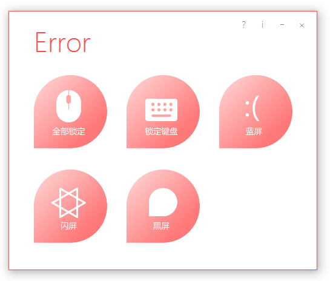
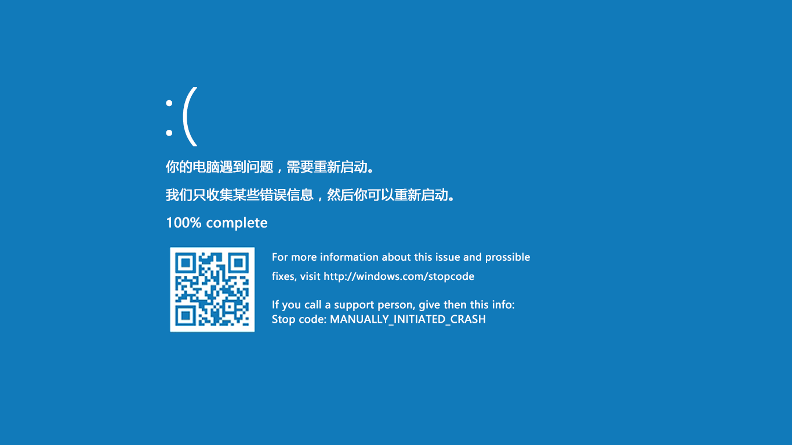

解锁
此项下载必读！
在锁定时用鼠标右键在屏幕上画一道斜线，最好从左上角画到右下角，如果鼠标隐藏了，先把鼠标往左上移，然后再盲画。接着会出现一个文本框，输入(当前小时数(24时制))+(当前分钟数的十位数)再点击按钮即可解锁。举个栗子，如果现在时间为18:52，那么解锁码就是18+5=23。一定要记住了！
因为此项真的很重要所以放在前面了，那么接着看：
功能
这是一个完美、强大的整人程序，你可以通过这个程序“锁定”电脑，制造出各种假象。（需.NetFramework3.5及以上，Win7及以上自带）
为什么是完美呢？因为Error运行后会屏蔽掉所有按键（除Ctrl+Alt+Delete），黑屏、闪屏和蓝屏还会隐藏鼠标箭头，且窗体会覆盖掉所有程序，任务管理器都不管用！
Error有5个功能：锁定全部，锁定键盘，蓝屏，闪屏，黑屏。
锁定全部是用一个几近透明的窗体将屏幕覆盖住，造成鼠标、键盘失灵的假象。
锁定键盘是用键盘钩子将键盘事件屏蔽，使用后最好点击 - 按钮将窗体最小化到系统右下托盘以隐藏窗体，杀毒软件可能会拦截，请加入白名单或关闭杀毒软件。
蓝屏是用一张蓝屏的图片作为窗体背景，并隐藏鼠标、屏蔽键盘，其会自动检测系统，如果是Win8及以上，则为 ：（ 界面，如果是Win7及以下，则是满屏的英文错误代码。
闪屏是每隔0.1秒就闪动一次黑屏，并屏蔽鼠标、键盘。
黑屏是将窗体背景设置为全黑，并屏蔽鼠标、键盘。
给大家截个屏吧，这是蓝屏（别问我怎么截的，系统截图工具+延迟功能轻松搞定）：
至于这个程序用来干啥就随便了，可以整整朋友，也可以用来锁屏。